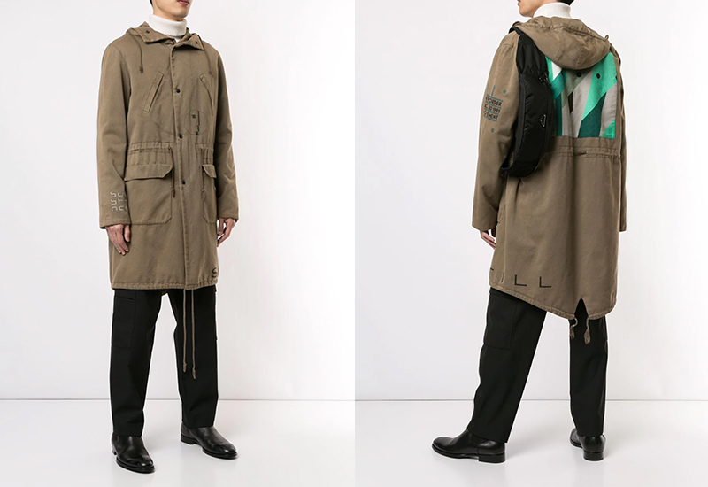
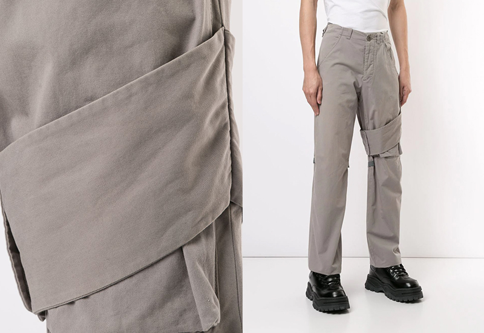
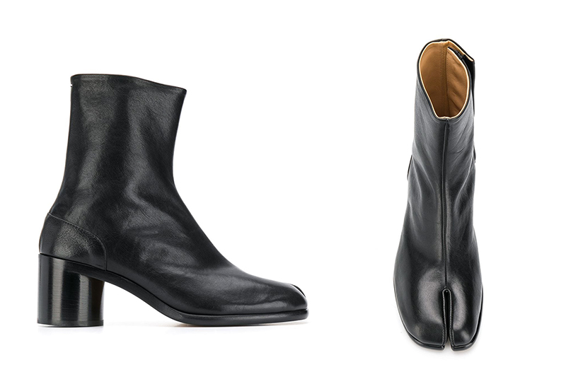

Products
Raf Simon

Raf Simons AW2003 ‘Closer’ collection was named after Joy Division's final album,
and featured selected album artwork graphics in collaboration with the man behind them –
legendary British graphic designer Peter Saville. You’ve probably seen the ‘Unknown Pleasures’
artwork everywhere since, but it all began here.
Helmut Lang

Though functionality, utilitarianism and minimalism are common themes in menswear today,
Helmut Lang was the first to do it. Often copied but never bettered, Lang was the first to incorporate
technical fabrics alongside military and workwear inspired functionality into his designs. These minimal
trousers from his most prolific time period turn functional strapping and bondage style wraps into ornamental
detailings.
Maison Martin Margiela

Prior to Margiela, fashion was considered an aesthetic art form rather than a conceptual one, but he would
soon flip that on its head. Margiela pioneered deconstruction techniques and oversized silhouettes as well as
reimagining the catwalk as a place of spectacle with his 1989 Pari runway show. After leaving his namesake brand in
2009, he left behind a legacy and archive that still feels timeless to this day. Though these Tabi boots are an archive
reissue, their design remains unchanged from the original.